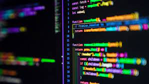
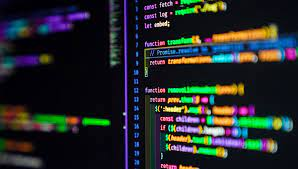
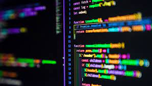

Életút első rész Neve szorosan összefügg az általa 1703-ban indított Rákóczi-szabadságharccal, melyben a teljes állami függetlenséget kívánta visszaszerezni a Habsburg Birodalomtól. E célnak megfelelően választották Erdély és Magyarország vezérlő fejedelmévé, aminek tökéletesen megfelelt, mivel Rákóczi Zsigmond erdélyi fejedelem leszármazottja volt, azonkívül dédapja és nagyapja, I. Rákóczi György és II. Rákóczi György, továbbá apja I. Rákóczi Ferenc is erdélyi fejedelem volt. Bár a magyar rendek a koronát is felajánlották neki, ezt visszautasította, helyette a vezérlő fejedelem ideiglenes címet választotta. A katonai hangzású "vezérlő fejedelem" megnevezés utalt a cím ideiglenes jellegére, mivel Rákóczi a Habsburg-ellenes szabadságharc idejére kívánta csak viselni. Életút második rész Szabadságharca azonban nem érte el a kívánt eredményt. A magyarság szemében ma is tiszta lelkű és becsületes vezetőként él tovább, mivel a szatmári békekötés után a felkínált közkegyelmet nem volt hajlandó elfogadni, és végig kitartott a magyar függetlenség ügye mellett. A szabadságharcot lezáró szatmári béke, a bukás ellenére is kompromisszummal zárult, amely megakadályozta Magyarország beolvadását a Habsburg Birodalomba, és a rendi alkotmány, ha látszólagosan is de fennmaradt 1848-ig.
Karrier első rész A 2011 áprilisában bemutatott Falcon Heavy hordozórakéta a legoptimistább forgatókönyv szerint már 2013 év vége felé végrehajtotta volna az első felszállását, azonban több nehézség együttes hatása bő négy évvel későbbre halasztotta a hordozórakéta első indítását. A két legfontosabb ok közül az egyik az volt, hogy a kezdeti elképzelésekkel ellentétben gyakorlatilag egy teljesen új középső rakétafokozatot kellett tervezni hozzá, mivel a Falcon-9 rakéta első fokozata komolyabb módosítások nélkül csupán a két oldalsó segédrakéta szerepére bizonyult alkalmasnak, főként a Falcon Heavy felszállása során a több irányból fellépő extrém terhelés miatt. Karrier második rész Ennek az újratervezésnek az eredményeképpen a Falcon Heavy sokkal inkább tekinthető egy önálló hordozórakétának, mint a Falcon-9 megnövelt változatának. A másik fő ok pedig az volt, hogy a Falcon Heavy több mint félmilliárd dolláros fejlesztési költségeit a SpaceX-nek saját magának kellett kigazdálkodnia, az űripari magáncég nem számíthatott külön állami támogatásra ezzel a projekttel kapcsolatban. Ha pedig mindehhez hozzávesszük azt is, hogy a SpaceX finom megfogalmazással élve más feladatokkal is el van foglalva, akkor nem az számít csodának, hogy mintegy négy évet késett a Falcon Heavy bemutatkozása, hanem hogy egyáltalán eljutott a megvalósulásig. Elon Musk saját bevallása szerint, a komoly nehézségek miatt többször is felmerült a SpaceX berkein belül a terv elvetése és a fejlesztés leállítása…
